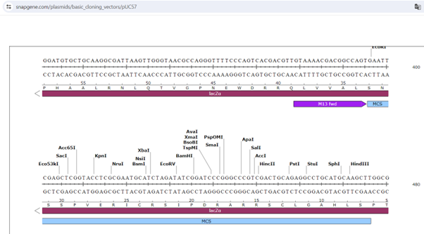

S17#
Avtor: Patricija Polutnik
Datum izdelave: 2024-05-10
Koda seminarja: S17
Vhodni podatek#
Rezultati analiz#
Ime in izvorni organizem proteina#
V vhodnem podatku sem najprej poiskala regijo MCS. Regijo sem našla s pomočjo iskanja zaporedja MCS vektorja pUC57.

To regijo sem kopirala v blastx in dobila 100% ujemanje proteinom putative dioxygenase. Najverjetneje izhaja iz bakterije rodu Nocardioides.
![blastx_putative_dioxygenase] (S17-blastx.png)
![genbank_putative_dioxygenase] (S17-putative_dioxygenase.png)
![biosample] (S17-biosample.png)
Velikost proteina#
Protein je dolg 170 aminokislinskih ostankov. Aminokislinsko zaporedje proteina je sledeče: MSDTTPSGDQLAALHARRAELRSAHLTDAARRPPSTARGLHHTALISSDVETTIGFYQGVLGFPLTELIE NRDYPGSSHFFFDIGNQNLLAFFDFPGLDVGPYAEVLGGLHHCAISVDPTLWAELVQRLDAAGVDHEVHS GVSVYFRDPDGARIELIADPLGEMYGEIVL
Sorodni proteini#
Zaporedje sem kopirala v blastp in dobila več proteinov z dobrim ujemanjem iz različnih organizmov. Najdeni podobni proteini so primerljivih dolžin in se z našim proteinom ujemajo v okoli 80%.
![blastp_nr] (S17-blast_nr.png)
Če naredimo poravnavo podobnih ak-zaporedij, vidimo, da imajo slabše ohranjen le začetni del, večina zaporedja pa je zelo dobro ohranjena, kar prikazuje tudi WebLogo.
![poravnava] (S17-poravnava_msa.png)
![weblogo] (S17-weblogo.png)
Filogenetsko drevo potrjuje domnevo, da je domnevna dioksigenaza iz bakterije rodu Nocardioides, saj je protein najbolj v sorodu s proteinom iz družine VOC bakterije Nocardioides.
![filogenetsko_drevo] (S17-filogenetsko_drevo.png)
Če iščemo z blastp po zbirki SwissProt, najdemo en primeren protein za primerjavo z E-vrednostjo 8e-05.
![blastp_swissprot] (S17-blast_swissprot_fosb.png)
Ob poravnavi zaporedja z našim proteinom dobimo 20% identičnost, kar pomeni, da ne moremo trditi, da sta homologa, kljub temu pa sta nekoliko podobna.
![poravnava_needle] (S17-needle_fosb.png)
Gre za metalotiol transferazo FosB iz vrste Bacillus cytotoxicus in katalizira adicijo tiolnega kofaktorja na fosfomicin, verjetno iz L-cisteina. Nahaja se v citoplazmi, struktura je bila predvidena z AlphaFold, v večini z zelo veliko gotovostjo.
Struktura in lokalizacija#
Struktura je bila določena z AlphaFoldom. Večina strukture je napovedana z visoko gotovostjo.
![alpha_fold] (S17-struktura.png)
Strukturo sem superpozicionirala s strukturo metalotiol transferaze. Dioksigenaza je obarvana vijolično. Vidimo lahko, da se v večjem delu strukturi dobro ujemata. Ujemata se dve beta površini in dve alfa vijačnici. N-konec dioksigenaze je daljši in vsebuje še eno alfa vijačnico. Ker vsebuje veliko polarnih in nabitih ak-ostankov, predvidevam, da vijačnica ni vezana v membrano in da se naš protein nahaja nekje v citoplazmi. Neujemanje N-konca se sklada tudi s poravnavami s podobnimi proteini, ki so se z našim ujemali v okoli 80%. Ti proteini so imeli osrednji del in C-konec zelo dobro ohranjen, N-konci pa so bili različni. Za encimsko delovanje našega proteina je verjetno pomembna osrednja regija.
! [superpozicija] (S17-superpozicija_fosb.png)
Po iskanju z blastp po zbirki PDB sem v zadetku dobila človeški protein Glyoxalase domain containing protein 5 z 28,68% ujemanjem (68% query cover). Zadetek ima nekoliko visoko E-vrednost. Protein je sicer dimer, monomer pa ima nekoliko podobno strukturo dioksigenazi.
! [blast_pdb] (S17-blast_pdb.png)
V superpoziciji monomera človeškega proteina (zelena) in dioksigenaze (modra) se spet ujemata po dve alfa vijačnici in dve beta površini s po štirimi trakovi. Očitno gre za nek ohranjen strukturni motiv.
! [superpozicija] (S17-superpozicija_cloveski.png)
Domenska zgradba#
Protein vsebuje eno domeno - VOC (angl. vicinal oxygen chelate). V interpro-ju je domena anotirana tudi kot glioksalazna domena. Podobni proteini, ki sem jih dobila z iskanjem v blastu, so imeli enako domeno.
! [Uniprot] (S17-domene-uniprot.png)
! [Interpro] (S17-domene-interpro.png)
Post-translacijske modifikacije#
Protein nima znanih post-translacijskih modifikacij. Modifikacija je sicer anotirana pri človeškem proteinu z glioksalazno domeno, in sicer O-vezan glikan. Ker pa je domnevna dioksigenaza bakterijski protein, ne domnevam, da ima enako modifikacijo.
Funkcija proteina#
Gre za domnevno dioksigenazo, in sicer (verjetno) za katehol 2,3-dioksigenazo ali soroden encim iz družine VOC, ki spadajo pod oksido-reduktaze. Za to družino je značilno, da vsebuje aminokislinske ostanke, ki koordinirajo dvovalenten kovinski ion [1]. Katehol 2,3-dioksigenaza katalizira cepitev ekstradiolnega obroča katehola oziroma njegovih derivatov. [2] [3]
Poravnala sem zaporedji metalotiol transferaze FosB in domnevne dioksigenaze. Metalotiol transferaza prav tako vsebuje VOC domeno in koordinira magnezijeve ione. Pogledala sem aminokislinske ostanke, ki koordinirajo kovinske ione. Na ekvivalentih mestih v domnevni dioksigenazi so enaki aminokislinski ostanki, zato predvidevam, da ti koordinirajo nek kovinski ion. To so His42, His112 in Glu155. Katehol dioksigenaze običajno vsebujejo železov ion, zato ga verjetno tudi naša domnevna dioksigenaza. Glu155 je hkrati verjetno tudi aktivno mesto, saj se ujema z aktivnim mestom metalotiol transferaze.
! [poravnava] (S17-poravnava-binding-site.png)
! [poravnava] (S17-poravnava-aktivno-mesto.png)
Domnevna dioksigenaza nima anotiranih interakcij z drugimi proteini. Proteina metalotiol transferaza in človeški protein z glioksalazno domeno imata sicer anotiran interaktom, vendar ker katalizirata druge reakcije kot domnevna dioksigenaza, ne predvidevam, da sta interaktoma primerljiva z interaktomom našega proteina.
Podobni evkariontski proteini#
Po iskanju z blastp sem dobila nekaj evkariontskih proteinov, ki pa so ‘hipotetični’ ali pa ‘nepoimenovani’. Prav tako niso anotirani in zato ne omogočajo zanesljive primerjave. Hipotetični protein BASA81_015393 iz vrste dvoživk Batrachochytrium salamandrivorans, ki je najbolj podoben, naj bi imel enako funkcijo kot domnevna dioksigenaza, torej da gre za katehol 2,3-dioksigenazo ali podoben encim. Podoben protein najdemo tudi v vrsti zelene alge Coccomyxa viridis. Neimenovan proteinski produkt iz Polarella glacialis vsebuje več regij, med drugim tudi regijo, ki ima verjetno katehol 2,3-dioksigenazno aktivnost. Poleg tega vsebuje še regijo DAP2 z dipeptidil aminopeptidazno oziroma aminoacil peptidazno aktivnostjo ter 2-sukcinil-6-hidroksi-2,4-cikloheksadien-1-karboksilat-sintazno regijo MenH. Neimenovan proteinski produkt iz Pedinophyceae sp. YPF-701 in pa protein iz družine glioksalaz iz organizma Monoraphidium minutum vsebujeta regijo, podobno VOC, kar pa ni dovolj za sklepanje o funkciji, saj proteini iz družine VOC katalizirajo različne reakcije.
![blast_evkarionti] (S17-blast_evkarionti.png)
Anotirana sta dva podobna evkariontska proteina, in sicer človeški in pa mišji protein z glioksalazno domeno 5. Proteina spadata v družino glioksalaz I, ki katalizirajo prvi korak v glioksalni poti, in sicer reakcijo glutation + metilglioksal = (R)-S-laktoilglutation [4], [5]. Metilglioksal in ostali reaktivni aldehidi nastajajo ob normalnem metabolizmu, a so za celico toksični [4].
![blast_evkarionti_swissprot] (S17-blast-evkarionti_swissprot.png)
Reference#
[1] „Vicinal oxygen chelate (VOC) domain profile (PS51819) - PROSITE profiles entry - InterPro“. Pridobljeno: 26. maj 2024. [Na spletu]. Dostopno na: https://www.ebi.ac.uk/interpro/entry/profile/PS51819/
[2] „Catechol 2,3-dioxygenase“, Wikipedia. 15. april 2024. Pridobljeno: 26. maj 2024. [Na spletu]. Dostopno na: https://en.wikipedia.org/w/index.php?title=Catechol_2,3-dioxygenase&oldid=1219122949
[3] J. B. Broderick, „Catechol dioxygenases“, Essays Biochem., let. 34, str. 173–189, 1999, doi: 10.1042/bse0340173.
[4] „Glyoxalase system“, Wikipedia. 3. december 2023. Pridobljeno: 26. maj 2024. [Na spletu]. Dostopno na: https://en.wikipedia.org/w/index.php?title=Glyoxalase_system&oldid=1188140597
[5] „Glyoxalase I (IPR004361) - InterPro entry - InterPro“. Pridobljeno: 26. maj 2024. [Na spletu]. Dostopno na: https://www.ebi.ac.uk/interpro/entry/InterPro/IPR004361/